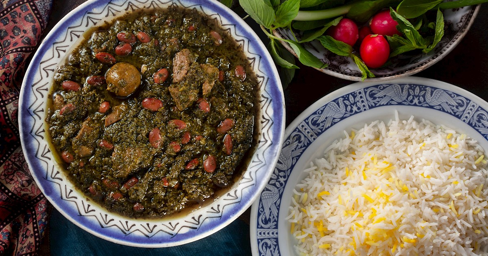

Enkelt recept på Ghormeh Sabzi
Gör en klassisk persisk gryta med örter, lamm, torkad lime och kidneybönor.
Ingredienser
För ungefär 6 portioner
- 100 g persilja
- 80 g gräslök
- 80 g koriander
- 50 g dill
- 1 dl rapsolja
- 1,2 kg grytbitar av lamm
- 2 gula lökar
- 2 vitlöksklyftor
- 1 msk gurkmeja
- 3 msk tomatpuré
- 3 torkade limefrukter
- 5 dl vatten
- 2 köttbuljongtärningar
- 1,5 tsk salt
- 2 krm peppar
- 1-2 burkar kidneybönor
Så här gör du
- Hacka alla örter fint.
- Stek örterna i olja tills de blir mörkare.
- Bryn lamm med lök och vitlök.
- Tillsätt gurkmeja och tomatpuré.
- Häll i vatten, buljong och torkad lime.
- Låt grytan sjuda i cirka 2 timmar.
- Tillsätt kidneybönor på slutet och smaka av med salt.
Serveringsförslag
